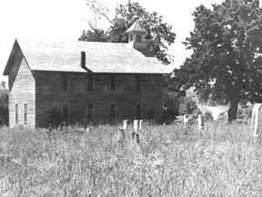

My wife and I were tooling along Interstate 35W on a vacation trip late last summer when I suddenly noticed that our car's gas gauge was teetering on EMPTY. Since towns are few, small and far between in northwestern Iowa, there were no farmsteads in sight and night was coming on, we quickly developed visions of being stranded on the freeway. It was a definite relief, at that point, to find the marker and exit for a small town only one mile off the expressway.
The tiny village of six or eight houses and a few weathered storefronts was little more than a wide spot on the side road. Main Street boasted two ramshackle garages but there were spider webs on the gas pumps at the first and its doors were locked. The second station was also locked but did show some signs of recent use and we pounded on the doors hoping to raise someone. No luck! A bit worried now, we looked around the village and found that it was almost deserted; a ghost town. Some of the homes were still in fairly good shape with windows boarded up for the protection. Others, with yards gown up in weeds, were clearly abandoned.
Down a little side street, one small cottage with an ANTIQUES sign in the yard offered us a last hope. We knocked on the door and an elderly woman came to greet us. Yes, her husband operated the second garage and sold gas but he had gone to Des Moines, fifty miles away, for the day. She didn't know when he would return. The gas pumps were locked and she didn't know how to operate them anyway. She was sorry, the nearest town where we might get gas was nine miles distant but we were welcome to wait until her husband returned and could help us. We thanked the lady and started a leisurely stroll about town to pass the time.
How is it with a population explosion, crowded city ghettos and housing priced out of reach of ordinary folk, that there are abandoned homes, ghost towns and near-ghost towns sprinkled all over the midwestern states and much of the rest of the country? There's no single, simple answer, of course, but-basically-the same forces of blind "progress" that pack so many of us into urban areas are also responsible for vacating these dwellings.
Within commuting distance of the big cities, land as you know is at a premium and housing costs have soared to astronomical heights. Beyond ready commuting distance (which may be fifty, sixty or more miles when freeways and interstate highways are available), the small farms have disappeared. Or, if not destroyed entirely, their houses and buildings stand idle and abandoned, vacant and worthless. The farmer who once provided for a family on forty acres must now farm 400 acres to utilize his expensive machinery at a profit. The big fish swallow the little fish.
Much the same thing has happened and is happening to small communities. In horse and buggy days, ten miles was a long way to town and the nearest post office. Country villages were located roughly ten miles apart as a result. Now, with good roads and modern cars, it is easy to travel thirty or forty miles to the larger towns and small cities with their shopping centers and other facilities. So the countyseat towns get bigger and the little villages in between are gradually starved out and discarded.
But need the smaller towns be abandoned? The opportunities they offer communes, flower children and other gentle souls fed up with the big city rat race are obvious. (Many of the vacated houses are proud structures 100 or more years old, built mainly of hardwood and-structurally-a lot more sound than the prefabbed, plywood units currently going up in today's urban slurbs. As for sheer quality of life, once you've experienced the luxury of living in a two story-plus full basement and attic-home with wide halls, high ceilings, spacious rooms, giant trees in the front yard and a grape arbor at the back door . . . you'll probably have some difficulty going back to the cramped confines of a single-level, slab house crammed into the treeless, bulldozed desert of yet another "modern "development. -JS)
Most of these smalltown abandoned houses can be rented or purchased for very little and many are available for taxes. A large number can be regally restored for relatively few dollars. Some absent owners might even pay a family to live in an old house rather than allow the abandoned property to deteriorate, become difficult to insure and a target for vandals.
Semi-ghost towns and abandoned farm homes offer some distinct advantages to a back-to-the-lander over, say, a raw wilderness retreat. Wells, septic tanks and cesspools are often still useable on the old properties. Their garden lots-mellowed from years of use and volunteer rhubarb, asparagus, horseradish and other perennials-can easily be brought back into production. Chances are bush and tree fruits will still be bearing or, with a little attention, will bear again. Good roads are already there for convenient coming and going and you'll probably find a few friendly people who, never having lost faith, will welcome a rebirth of the region.
The greatest obstacle to recycling these old homes and deserted towns, of course, is the matter of money and the business of earning a living. If there were now industries and employment opportunities within reasonable distance of such properties, they wouldn't have been abandoned in the first place. If you can figure out a way to bring a little steady cash into one of these communities, you'll probably find that the rest of the recycling will take care of itself. And attracting that seed money may not be as difficult as you think.
In the west, such famed ghost towns as Central City, Colorado; Deadwood, South Dakota; Tomestone, Arizona and Virginia City, Nevada have managed a measure of recovery by catering to the tourist trade. There are similar opportunities for many other ebbing villages.
The increasing interest in antiques (extending to artifacts of the 20's and 30's and even to milk cans still in use only two or three years ago) indicates that a creative revival of home crafts and handiwork should draw customers ready to swap dollars for butter molds, banjoes, straw dolls, quilts and other down-home products. Indeed, MOTHER NO. 6 reported on the success Don Melvin and his family currently enjoys with their chair caning, wood carving, organ repair and other "old time" home businesses. There are dozens of other interesting and satisfying methods of earning a livelihood (you'll be reading of many more in MOTHER -JS) that do not depend on a "good" location in a large city. Any one of thousands of dying country towns would be an ideal location for such an enterprise.
And wouldn't it be doubly satisfying if your little business-while making possibly a comfortable life in a big, old house for your family-also helped give an entire village a new lease on life?
|
 The stone Post Office at Elk Ranch, Arkansas has been stuccoed and modernized for a vacation home. Most of the wooden houses of this village and the once-thriving nearby town of Brooklyn have long since disappeared. At the turn of the century, General George Russ fenced a thousand acres here and domesticated 100 elk to demonstrate that elk meat could be produced at less cost and more profit than beef, pork or mutton. A USDA Bulletin of 1910 confirmed his findings. |
Restoration of a pioneer log cabin marks the site of Old Forsythe, Missouri. The free museum attracts tourists who buy handicrafts and other souvenirs. |
Linfred Barrett has been dead forth years but his little grocery and feed store still stands beside Highway 103 near Oak Grove and Green Forest, Arkansas. |
|
Old Carrollton, Arkansas was a thriving town and a famed Confederate Recruit Training Center in Civil War times. The old church and graveyard remain. |
|
|